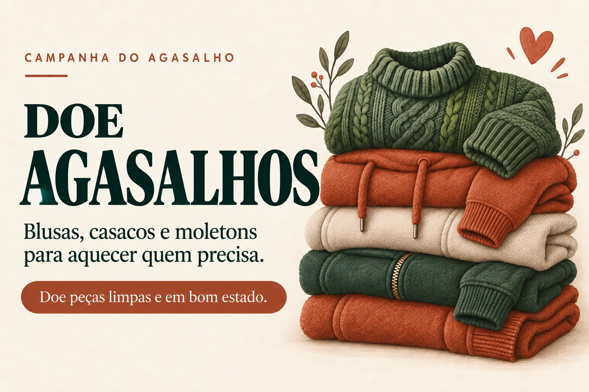
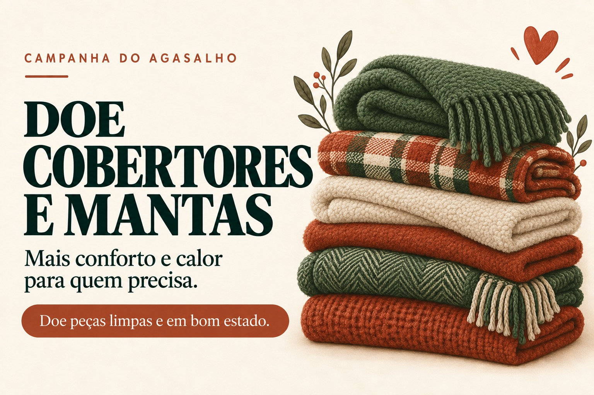
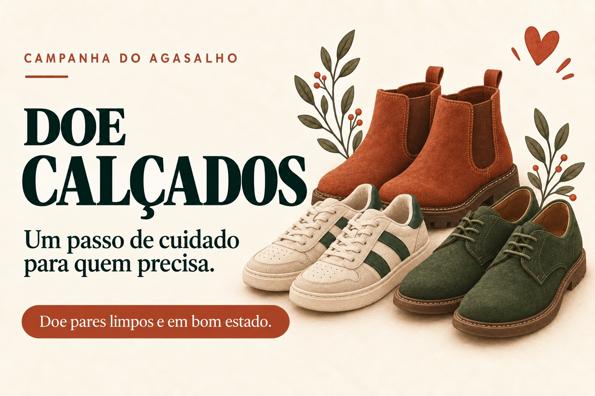

Aceitamos casacos, moletons, blusas de frio e jaquetas de todos os tamanhos, adulto e infantil. As peças devem estar limpas e em bom estado de conservação, sem rasgos ou manchas permanentes.

Agasalhos & Moletons
Cobertores & Mantas
Cobertores, mantas e edredons para as noites frias.
Cobertores, mantas e edredons são os itens de maior demanda durante o inverno. Aceitamos peças de solteiro e casal, desde que estejam limpas e sem furos. Roupas de cama em bom estado também são bem-vindas.

Cobertores & Mantas
Calçados
Tênis, sapatos e botas em bom estado.
Tênis, sapatos e botas fechadas ajudam a proteger do frio e da chuva. Pedimos que os pares estejam completos, limpos e com solado em condições de uso. Chinelos e sandálias não são aceitos nesta campanha.

Calçados
Roupas Infantis
Peças de inverno para bebês e crianças.
Roupas infantis de inverno são as que mais faltam nas arrecadações. Aceitamos macacões, casaquinhos, meias, toucas e luvas para bebês e crianças de todas as idades, desde que estejam limpos e íntegros.